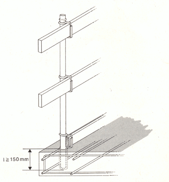
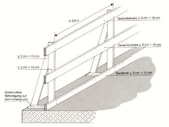

| 7 | Anforderungen an Seitenschutzpfosten |
| 7.1 | Allgemeines |
| 7.1.1 | Für Seitenschutzpfosten muss ein Brauchbarkeitsnachweis des Herstellers erbracht sein. Der Brauchbarkeitsnachweis besteht aus der Aufbau- und Verwendungsanleitung und der Prüfung nach den BG-Grundsätzen für die Prüfung von Seitenschutzbauteilen, Randsicherungen und Dachschutzwänden (BGG 928, bisherige ZH 1/586). |
| 7.1.2 | Seitenschutzpfosten müssen in eingebautem Zustand gegen unbeabsichtigtes Lösen gesichert sein. |
Gegen unbeabsichtigtes Lösen sind Seitenschutzpfosten z.B. gesichert, wenn

| Bild 3: | Sicherung gegen unbeabsichtigtes Lösen: I ³ 150 mm |
| 7.1.3 | Seitenschutzpfosten müssen Einrichtungen zur Lagesicherung des Geländer-, Zwischenholms und des Bordbrettes enthalten. |
Einrichtungen zur Lagesicherung von Brettern können z.B. Nagellöcher für Heftnägel sein.
| 7.2 | Regelausführung für Seitenschutzpfosten |
| 7.2.1 | Für Seitenschutzpfosten aus Holz, die Bild 4 entsprechen, gilt der Brauchbarkeitsnachweis als erbracht. |

| Bild 4: | Seitenschutz aus Holz |
| 7.2.2 | Für Seitenschutzpfosten aus Stahlrohren nach Abschnitt 5.2.1 mit mindestens 48,3 mm Durchmesser und 3,2 mm Wanddicke oder aus Aluminiumrohren nach Abschnitt 5.2.2 mit mindestens 48,3 mm Durchmesser und 4,0 mm Wanddicke gilt der Brauchbarkeitsnachweis als erbracht, wenn
|